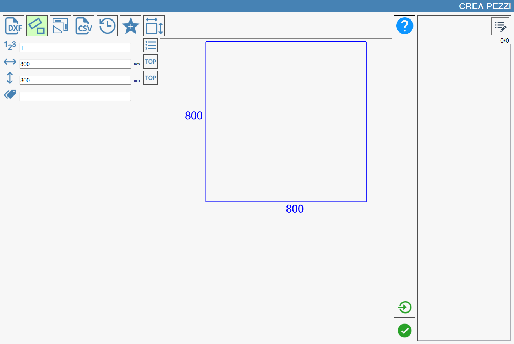
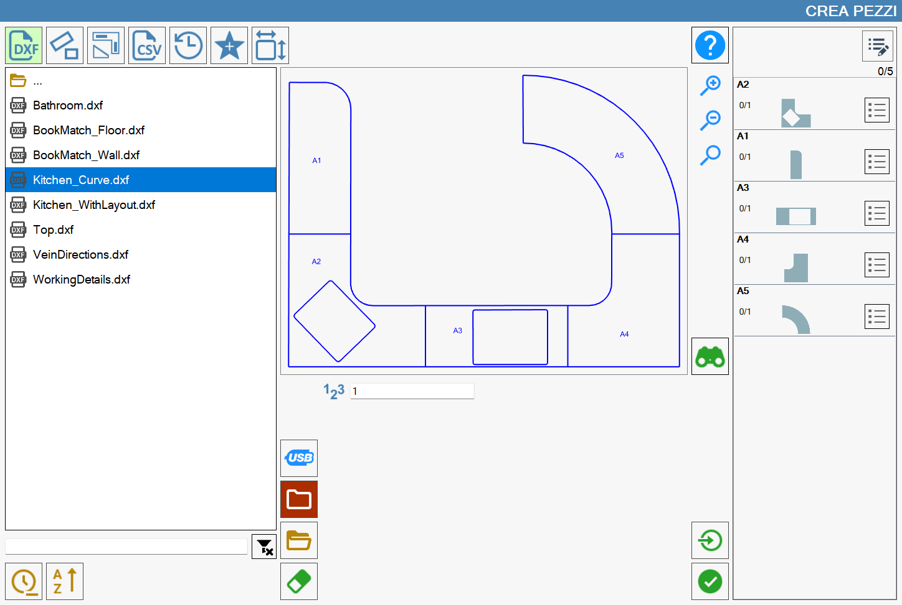
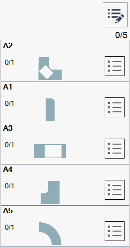
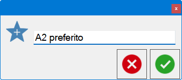

Parametrix è progettato per la lavorazione di figure geometriche piane e chiuse, che rappresentano i pezzi.

Modalità di creazione dei pezzi
Come è possibile osservare dalla barra di navigazione superiore,

la creazione dei pezzi avviene tramite l’utilizzo di una delle seguenti modalità:
Importazione file DXF | |
 | Creazione rettangoli |
 | Creazione figure parametriche |
Importazione file CSV | |
Cronologia | |
Preferiti | |
 | Creazione pezzi commerciali |
Una descrizione più approfondita del funzionamento di ogni modalità verrà fornita nel relativo paragrafo di questo capitolo.
La funzionalità selezionata, viene evidenziata con un colore verde chiaro. All’apertura del pannello “Crea Pezzi“, l’operatore troverà selezionata la modalità “Creazione rettangoli“.
Importare i pezzi in Parametrix
Per concludere correttamente la creazione di uno o più pezzi, è necessario utilizzare il seguente pulsante, che è possibile trovare in ogni sezione del pannello:
 | Importa pezzi |
Il funzionamento della lista dei pezzi, che si trova sulla parte destra del pannello, viene spiegato nel relativo capitolo.
Nella seguente immagine si può osservare come, dopo aver premuto il pulsante “Importa pezzi“, la lista dei pezzi si sia popolata con gli elementi che componevano il file DXF che si è deciso di importare.

Lista dei pezzi importati
La lista dei pezzi visualizzata nella parte destra del pannello “Crea Pezzi“ è inizialmente vuota. Viene popolata man mano che vengono creati pezzi tramite le funzionalità descritte in precedenza in questo capitolo.
Di seguito viene riportato un esempio di lista pezzi vuota (a sinistra) e un esempio di lista popolata (a destra):
 |  |
Proprietà avanzate dei pezzi
Dalle immagini di esempio precedenti è possibile notare un singolo pulsante presente nell’angolo superiore destro della lista dei pezzi da lavorare:
 | Mostra informazioni avanzate di Pezzo |
|---|

Nella parte inferiore della finestra Pezzo sono presenti due pulsanti illustrati di seguito:
Copia | |
Incolla |
Visualizzare i dettagli del pezzo
Seguendo l’esempio della lista popolata a destra visualizzata a inizio capitolo, viene evidenziato ora il comportamento del seguente pulsante:
 | Mostra dettagli pezzo |
Dopo la pressione del pulsante il pezzo in lista appare come di seguito:

Aggiungi il pezzo selezionato tra i preferiti
È possibile inserire qualunque pezzo nell’apposita sezione dei pezzi preferiti utilizzando il seguente pulsante:
Aggiungi preferito |
La pressione di questo pulsante farà apparire il seguente pop-up:

La compilazione del campo di testo e la successiva conferma permetterà all’operatore di inserire il pezzo selezionato nella lista dei pezzi preferiti, precedentemente illustrata.
